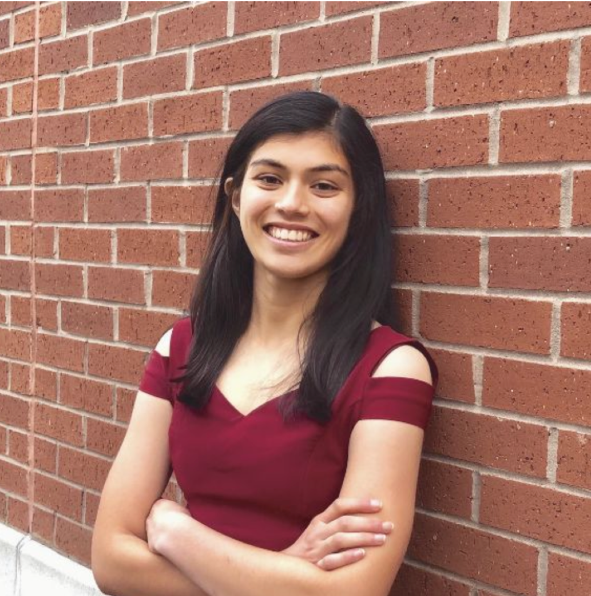
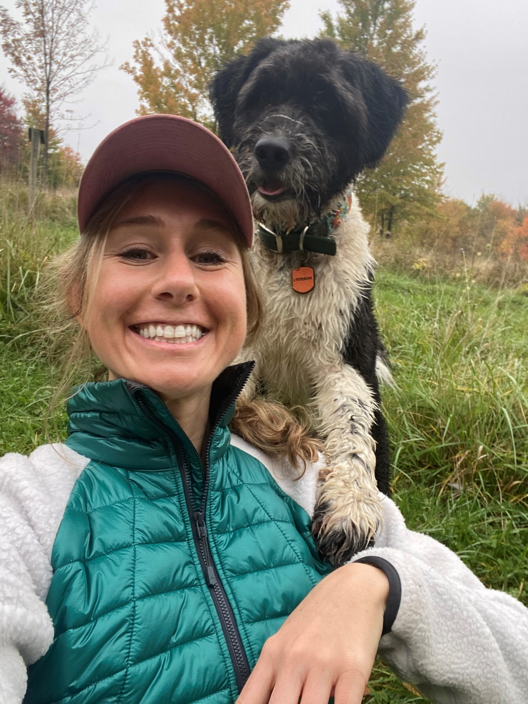

4 Teaching Assistants
Most of this year’s stellar group of teaching assistants have been in your shoes - they’ve taken the course in the past, and they enjoyed it enough to come back for more. They are volunteering their precious time and energy to help make the course happen, and we couldn’t be more delighted to welcome you to the course. All office hours and all teaching assistant work will be done remotely.
There is a lot to learn in this class. Don’t suffer in silence - talk to us! As mentioned earlier, you shouldn’t spend more than 15 minutes struggling with anything in this class without asking for help.
Visit the Getting Help with 432 section of this Syllabus for more details.
The Spring 2023 Teaching Assistants for 432 are:
- Stephanie Merlino Barr, PhD candidate in Clinical Translational Science
- Shiying Liu, PhD candidate in Epidemiology & Biostatistics
- Ali Elsharkawi, MS student in Clinical Research
- Monika Strah, MS student in Epidemiology & Biostatistics
- Ria Tilve, MPH student in Population Health Research
- Kyaw Hla, MS student in Clinical Research
- Zhengxi Chen, PhD student in Epidemiology & Biostatistics
- Lindsay Petrenchik, MS graduate in Epidemiology & Biostatistics
4.1 TA office hours
TA office hours are held via Zoom, and will begin on Friday 2023-01-20, and continue through Sunday 2023-04-30, except for Spring Break (no office hours March 10-17.) The weekly schedule appears below, and on our Contact Us page as well as in our Course Calendar.
All times Eastern.
| Date | Time(s) |
|---|---|
| Sundays | 4:00 - 5:30 PM, 6:00 - 7:00 PM and 8:00 - 9:30 PM |
| Mondays | 5:00 - 6:00 PM, 7:00 - 8:30 PM |
| Tuesdays | 12 Noon to 12:45 PM |
| Wednesdays | 7:30 - 9:00 PM |
| Thursdays | 12 Noon to 12:45 PM, 6:00 - 7:30 PM |
| Fridays | 5:30 - 7:00 PM |
| Saturdays | 10:00 - 11:30 AM |
- Our Shared Google Drive (432 Spring 2023 Dr Love and Students) will contain Zoom links for each of these sessions (by Thursday 2023-01-19) in a document called TA office hours schedule and Zoom links.
- No appointment is necessary. Please just drop in.
- Be sure to log into Google via CWRU to access the shared Drive.
- TA office hours are cancelled during Spring Break.
Professor Love will also hold “office hours” before and after each class to the extent possible.
4.2 Getting To Know The TAs
Stephanie Merlino Barr
Stephanie Merlino Barr is a Ph.D. candidate in the Clinical Translational Science program and a full-time dietitian in the Neonatal Intensive Care Unit (NICU) at MetroHealth Medical Center; she is excited to be back TAing 431/432! Stephanie’s research focuses on the relationship of early life nutrition interventions and long-term growth and developmental outcomes in very low birthweight infants. Outside of work & PhD life, Stephanie spends her time running, gardening, and hanging out with her dog.
Shiying Liu

Shiying Liu is a fourth-year Ph.D. candidate in Epidemiology and Biostatistics within the Department of Population & Quantitative Health Sciences. Shiying completed her undergraduate study focusing on biological sciences at Fudan University back in China and then received her master’s degree in biomedical engineering from Carnegie Mellon University. She took 431/432 in 2019/2020, which was of great help for her research projects and the preparations for the comprehensive exam. Currently, her research focus broadly addresses the critical gaps in knowledge of how information is encoded into DNA and how the story, when changed, leads to human disease using emerging statistical and bioinformatic approaches. Outside of research, she is a foodie and a superfan of detective fiction. Always passionate to solve the puzzle, “the truth is always curious and beautiful to seekers after it.”
Ali Elsharkawi
Ali Elsharkawi is in his third year in the M.S program in Clinical Research. He completed his bachelor’s in Medicine, residency and fellowship in Electrophysiology. For his research interest, he studied the outcome of atrial fibrillation ablation procedures. Ali took 431 and 432 this past year and he is applying the skills he learned in his research projects. Ali enjoys spending time with his family, playing music, watching soccer, and traveling.
Monika Strah

Monika Strah is presently completing her last semester of the M.S. program in Biostatistics. She is looking forward to a second year as a TA for 431/432 and also working as a research assistant in the PQHS department. Monika’s undergraduate degree is in Mathematics and she taught Mathematics at Kent State before coming to Case. Monika’s research includes mathematical approaches to questions in population genetics and human evolution. Monika enjoys reading, hiking and is a member of the National Ski Patrol.
Ria Tilve

Ria Tilve is in her second year of the MPH program in Population Health Research. She completed her bachelor’s degree in Biochemistry last spring at CWRU. Her current research focuses on musculoskeletal health and biomedical imaging. Ria took 431 and 432 this past year, and she is applying those skills in her research projects. Outside of studying, Ria enjoys spending time with her family, running, watching sports, and exploring new places.
Kyaw Hla
Kyaw Hla is in his final semester in the M.S. program (capstone) in Clinical Research. He completed his bachelor’s in Medicine and Surgery in Burma. Currently, his research addresses the genetic mechanisms of critical illness in TB and COVID-19. He took 431/432 this past year, and he is applying the skills of statistics in his research projects. He enjoys reading, writing and solving puzzles.
Zhengxi Chen

Zhengxi Chen is a first-year Ph.D. student in Epidemiology and Biostatistics within the Department of Population & Quantitative Health Sciences. Zhengxi obtained his bachelor’s degree in biochemistry at University of Wisconsin-Madison in 2018 and Master’s degree in Biostatistics at Duke University in 2020. After working at Duke University Health System and VA Medical Center for two years, he decided to pursue a Ph.D. His current research interest is the joint modelling of time-to-event and longitudinal data. Outside of work & PhD life, Zhengxi enjoys playing Texas Hold’em, video games and badminton. He’s looking forward to making connections with students in and out of class.
Lindsay Petrenchik

Lindsay Petrenchik is a Patient Centered Outcomes Fellow at Novartis. At Novartis, Lindsay is involved in the Patient Reported Outcomes (PROs) of the Statistical Analysis Plans, supports PRO post-hoc analyses and R Shiny visualizations, and has dabbled in some psychometric validation studies. After pursuing her PharmD at Touro College of Pharmacy, Lindsay completed her masters in Biostatistics (Healthcare Analytics Track) at Case in 2021, during which she greatly valued the 431/432 tutoring sessions. Lindsay is excited to help other students learn R, conceptualize statistical methods, and share how she uses 431/432 skills daily!